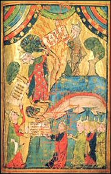
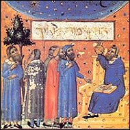

|
The Kabbalah is above all a lesson in life. Its aim is not for man to be good. It merely hopes that one day, he might become better. Marc-Alain Ouaknin, Mysteries of the Kabbalah |
Etymology

The Kabbalah, which is also written as cabbala, kabbala or kabala, comes from the Hebrew qabbalah. Its root, QBL (Qof, Bet, Lamed) means "to receive" or "to accept". Literally, it translates as "tradition" in the sense of an esoteric tradition that has been passed on orally, but it also means "reception" and "acceptance"; understanding one's inner self opens and lights up "receptacles" that help to receive the pure energies required for one's spiritual development. The master (the one who knows) gives, and the student (the one who questions) receives. The Kabbalist is seen as the student. Traditionally speaking, the Kabbalah dates back to Moses, who allegedly received "decoding grids" from God to decipher the secrets of Creation.Definition
The Kabbalah is a general term applied to a mystical Jewish movement whose roots go as far back as primitive Judaism and which flourished in Spain and Southern France in the 13th century, followed by Safed in Palestine in the 16th century.
The Kabbalah attempts to adapt the theories of Aristotle, Pythagoras and Plato to the biblical dogmas of Creation,

the Jewish gnosis and the Talmudic exegesis. For a long time, it was taught by a few initiates to small groups of disciples. Several treatises were written, but rarely published. The Kabbalah is not a body of consistent doctrines, but a set of theories and experiences that are often far removed from each other. The Kabbalah represents the mystic tradition of the Hebrews and arose from deeply religious men and great thinkers.